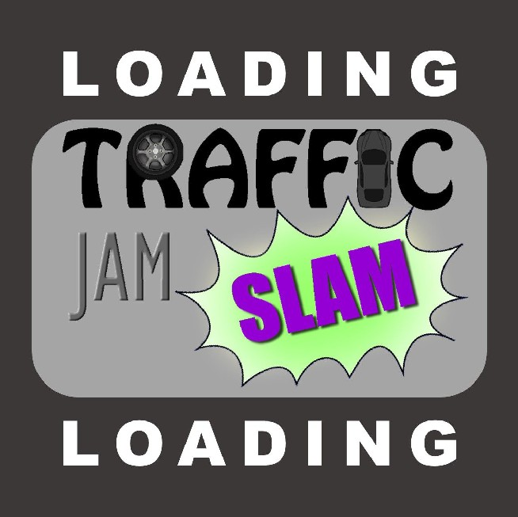
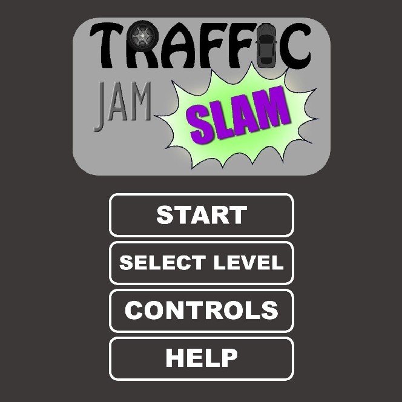
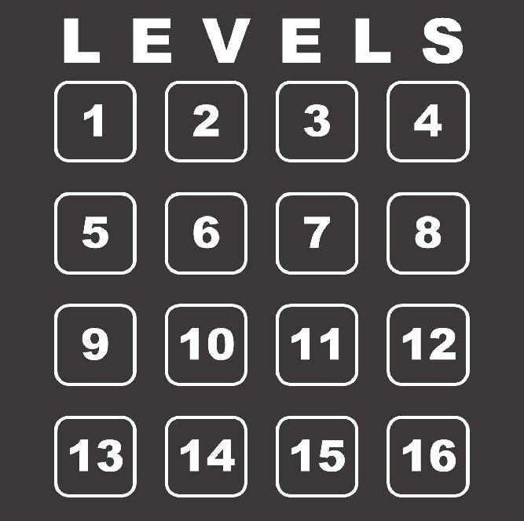
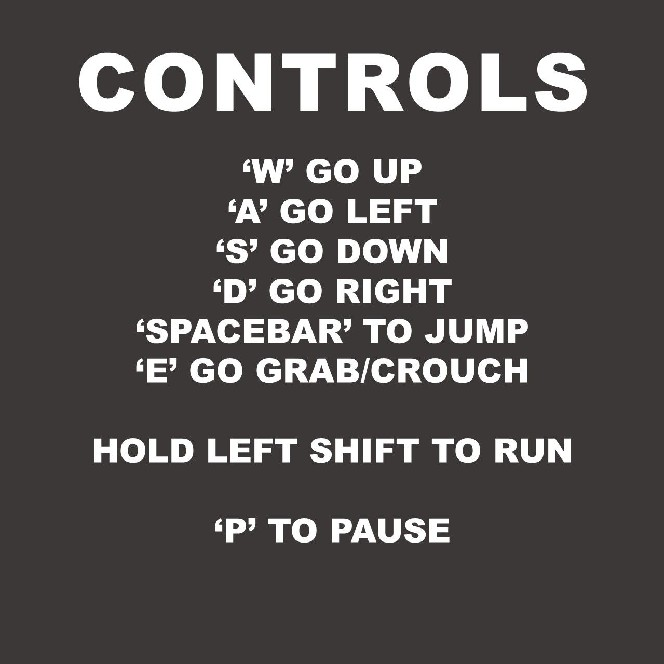
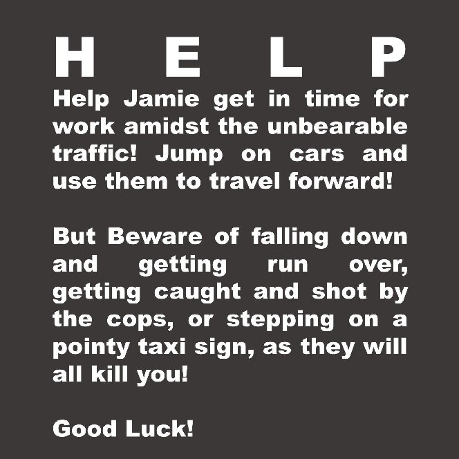
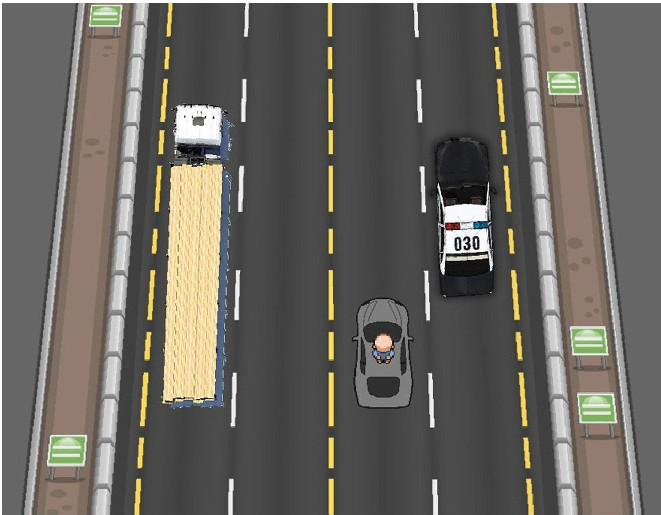
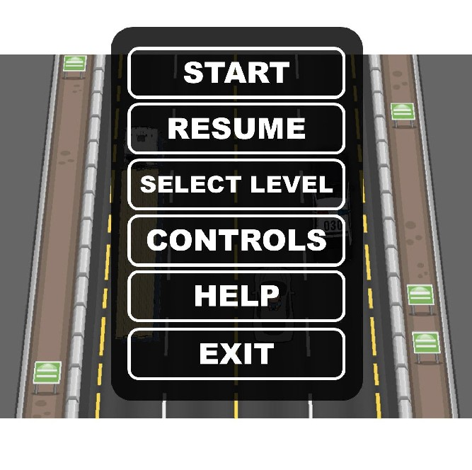

Traffic Jam Slam
Game Design Document
By Dong Woo Shin & Jin Woo Han
Introduction
This document describes a game called “Traffic Jam Slam”, which is an easy to play top-down platformer game, where the player must jump on top of cars to reach the goal. The game will employ sprite based animations, tiled backgrounds, physics, and top-down scrolling.
Technology
Traffic Jam Slam will use Phaser, an online javascript-based game engine that incorporates various features to facilitate the use of game sprites, physics and so on. We will use Adobe Photoshop to draw our art, and use Audacity and Logic to create custom sounds & music.
Backstory
The player controls Jamie, an ordinary man stuck in traffic on his way to work. Jamie is fed up with being stuck in traffic all the time, so he decides to ditch his car, and speed up his commute by running on top of his fellow commuters’ cars, while trying to avoid being mortally wounded and getting
arrested by the police.
Objective
The player must run forward and reach a set destination within a set amount of time. It is very recommended that the player try to stay on top of cars as much as possible, as falling off of the top of cars, or trying to squeeze your way through cars while on the road is very time-consuming, and may lead to a time out. There are also many obstacles and hazards, such as trucks full of radioactive material that will damage Jamie, or police cars that will probably want to arrest him as soon as they see him.
Gameplay
Jamie is able to run forward, backward, left, and right, and jump in those directions as well. Jamie runs faster while he is on top of cars, and he will be significantly slower while on the road, as he will have to squeeze through cars, and climbing back onto cars will take time. Players can also choose to run through the opposite lane to avoid obstacles on the main lane. The opposite lane (left lane) is usually not jammed and has cars coming through at high speeds, so it is a risky choice to take.
The Main lane(right lane) may not always be jammed. When traffic starts to flow, Jamie will have to hold on to the vehicle he is currently on (by pressing ‘E’), or he will fall off. Players can also use the
moving cars to their advantage by jumping at the right moment from a car that is just stopping, Jamie will get a big boost forward.
The obstacles include:
● All moving cars: If Jamie gets run over, it’s game over.
● Taxis: If Jamie steps on their pointy taxi sign, it will kill him.
● Police cars: If Jamie is seen by the police(if he touches the spinning lights), he will get arrested, or shot, or both.
Some special vehicles include:
Controls
As far as the GUI is concerned, if we consider
● Splash Screen - The splash screen GUI simply presents a game logo and a loading gif. The game will transition into the main menu after a few seconds.

● Main Menu - The main screen of the game. The main menu will contain the following items:

○ Start - The game will start at level 1, which will play a short animation on why Jamie decides to jump over cars.
○ Select Level - Button that will prompt the user with the following screen, in which it allows the player to select a level he wishes to play in:

○ Controls - This button will prompt the player with the controls screen, explaining the player how to use the controls. If the player clicks anywhere on the Controls Screen, the Main Menu will be displayed again.


● In-Game GUI - Once a game starts, a 5-4-3-2-1-Begin sequence is counted down and displayed for the player to see. At Begin, the player will get off his car, and the platforming will begin. At the top-left of the screen, a pause button will be displayed, in which, if clicked or pressed ‘p,’ will display a miniature version of the Main Menu, with the addition of Resume
and Exit button. The Resume button will simply resume the game, while the Exit button will take the player back to the Main Menu.

II

● You Lose Screen - If the player dies or is busted by the police, the player is prompted to this screen. It contains a retry and an exit button.
All artwork in the game will be original. The following needs to be created:
● Jaime- we'll only dress Jaime in traditional work attire. Each will require animations for:
○ Walking Up (sped up animation variant used for run upwards)
○ Walking Down (sped up animation variant used for run downwards)
○ Jumping Right
○ Jumping Left
○ Jumping Up
○ Jumping Down
○ Squeezing through cars (when Jamie is on the road), in all four directions.
○ Getting Busted Animation
○ Falling
○ Dying (getting run over, getting shot by the police, stepping on a taxi sign, radioactive disintegration)
○ Climbing onto vehicles
○ Climbing onto tall vehicles
● Vehicles - Simple vehicle sprites for:
- Normal sedan cars, of 4 different colors. Green, Blue, Black, and White (4-5 passenger cars)
- Taxis
- Buses, 3 types. Passenger Bus, School Bus, and Tour Bus.
- Sports car, red in color, and fast & crashing animation.
- Pickup Truck, with space for 1 or 2 cargo slots.
- Police Cars, with a cone-shaped siren light animation, that when touched with the player, the player loses.
- Trailer Truck, the longest vehicle in the game. 2 versions, one white cargo trailer, and one light-yellow cargo trailer.
Each vehicle should have a wheel moving animation, and a ‘bump’ animation, of when the player jumps on it.
● Road - the road tileset for level construction containing:
- Signposts
- Road (no lines)
- Road (white dotted line) Left & Right
- Road (end of lane line) Left & Right
- Road (Yellow Lane division Line) Left & Right
- Road with Sidewalk (Left & Right)
- Sidewalk Tile
- Caution Sign Tileset on Sidewalk tile
- Stop Sign Tile
- Speed Limit Tile on Sidewalk.
All sound effects will be original. Sounds must be made to coincide with each of the following events:
● Walking
● Landing on a Platform
● Car Engine Rumble
Will Implement a high-tempo, energetic music sequence for the main theme.
• Main Menu Music Sequence
• Main Theme Music (Main theme)
• You Lose Music Sequence